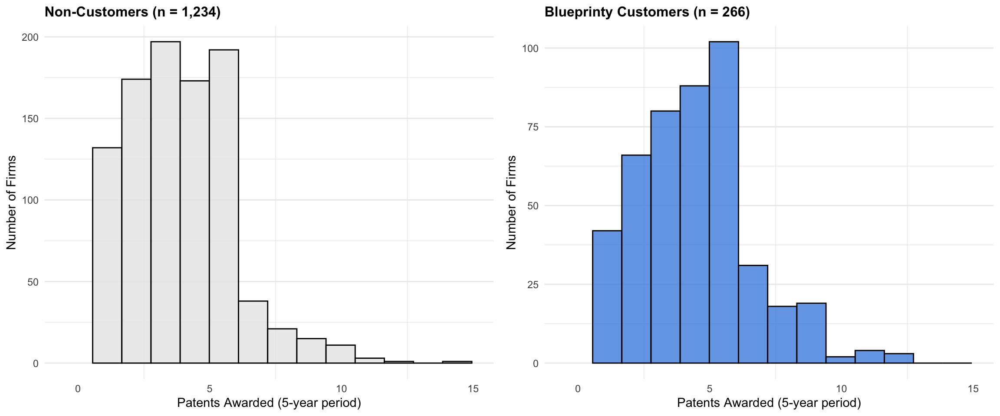
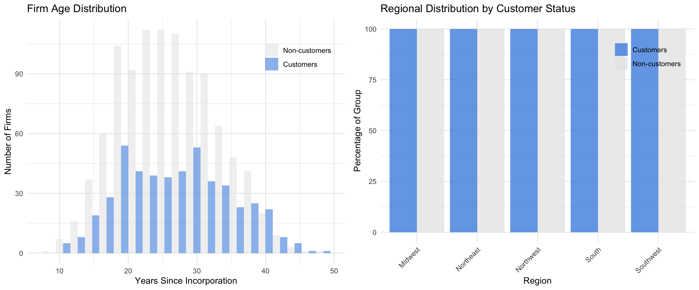
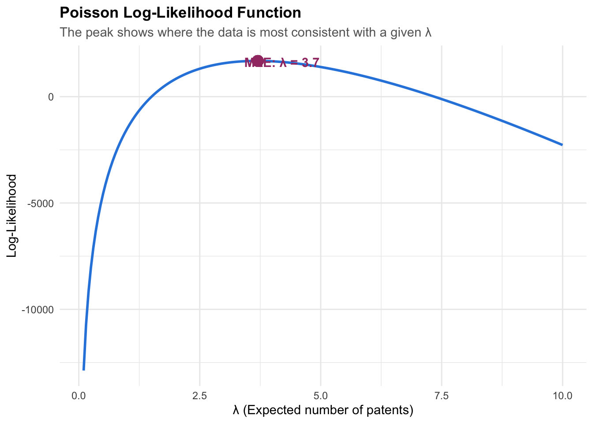
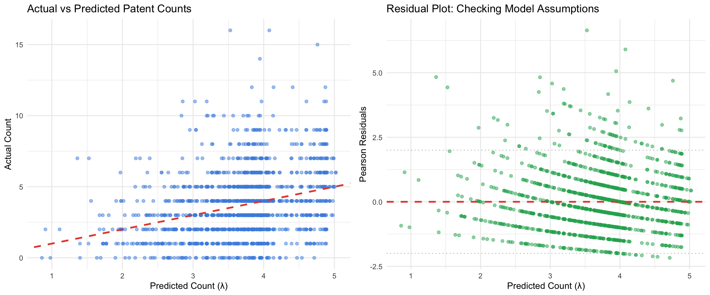
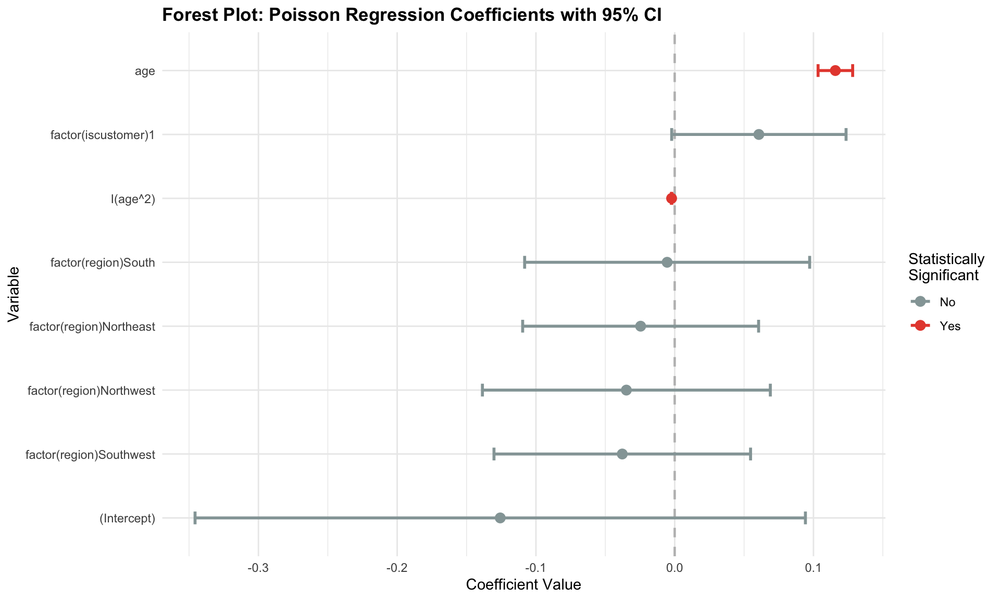
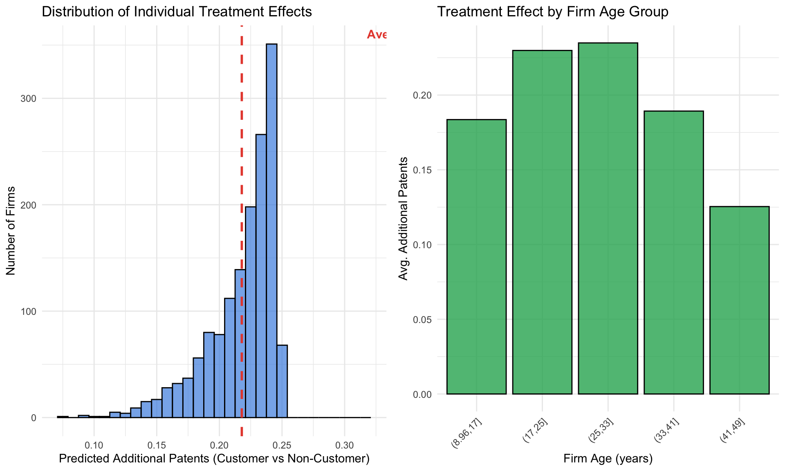
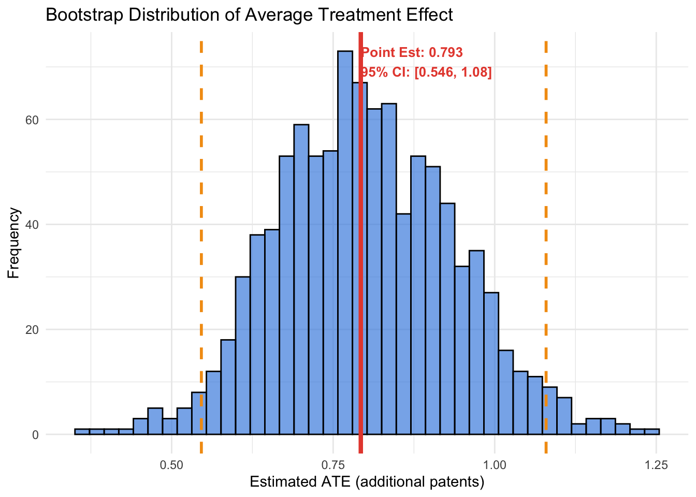

| Metric | Value |
|---|---|
| Dataset size | 1500 firms |
| Patent count range | 0 to 16 |
| Blueprinty customers | 481 firms (32.1%) |
| Mean firm age | 26.4 years |
Poisson Regression and Maximum Likelihood Estimation
A Case Study of Blueprinty’s Software and Patent Awards
Introduction
Blueprinty is a small but ambitious company with a clear value proposition: they develop specialized software designed to help engineering firms navigate the patent application process more successfully. Their tools are built specifically to streamline blueprint preparation and submission to the U.S. Patent Office.
The marketing team at Blueprinty has an appealing story they’d like to tell: firms using our software win more patent approvals. But here’s the challenge: proving this claim is surprisingly tricky.
In an ideal world, we’d have data showing each firm’s patent success before and after adopting Blueprinty’s software. But that data doesn’t exist. What we do have is a snapshot of 1,500 mature engineering firms—established companies (not startups)—along with:
- How many patents each firm had approved over the last 5 years
- The firm’s age since incorporation
- Geographic region
- Whether or not the firm uses Blueprinty’s software
On the surface, the claim seems testable: just compare patent counts between customers and non-customers. But there’s a fundamental problem lurking beneath the surface: selection bias. Blueprinty’s customers didn’t arrive randomly. Firms that chose to adopt the software might be fundamentally different from those that didn’t. Perhaps larger, more established firms are more likely to invest in specialized software. Perhaps certain regions have stronger innovation cultures. Any raw difference in patent counts could reflect these unobserved differences in firm quality and capabilities rather than the actual impact of the software itself.
In this analysis, we’ll use Poisson regression and maximum likelihood estimation to carefully estimate the effect of Blueprinty’s software while accounting for measurable differences between customers and non-customers. We can’t solve the fundamental selection bias problem, but we can make progress.
Exploring the Data
Let’s start by understanding what we’re working with.
Patent Awards by Customer Status
First, let’s compare the raw distribution of patent awards between firms using Blueprinty and those that don’t.

| Group | Mean Patents | Median Patents | Std Dev | N Firms |
|---|---|---|---|---|
| Non-customers | 3.47 | 3 | 2.23 | 1019 |
| Blueprinty Customers | 4.13 | 4 | 2.55 | 481 |
What we observe: Blueprinty customers have a notably higher mean number of patents (4.13 vs. 3.47). On the surface, this supports the marketing claim—but we must be cautious. The customer group is smaller (481 vs. 1019 firms), and the distribution shapes overlap substantially, suggesting confounding factors may be at play.
Selection Bias: Firm Age and Geography
To understand potential selection bias, let’s examine whether customers and non-customers differ systematically on observable characteristics.
# A tibble: 2 × 4
iscustomer mean_age sd_age median_age
<int> <dbl> <dbl> <dbl>
1 0 26.1 6.95 25.5
2 1 26.9 7.81 26.5
Key findings on selection bias:
Age: Blueprinty customers are slightly older on average (26.9 years) compared to non-customers (26.1 years). The gap is not dramatic, but it is still a reminder that customers and non-customers are not randomly assigned.
Geography: The regional distribution differs sharply between groups. Customers are especially concentrated in the Northeast (where Blueprinty may have stronger sales coverage or product-market fit) and less represented across the other regions.
These differences matter because age and geography may independently influence patenting success. Simply comparing raw patent counts conflates the effect of the software with these underlying firm characteristics. That’s where regression comes in.
A Simple Poisson Model via Maximum Likelihood
Why Poisson Regression?
Our outcome variable is a count of patents—a non-negative integer. The Normal distribution is a poor choice here because:
- It allows negative values (patents can’t be negative)
- It assumes continuous variation (patents are discrete)
- It assumes constant variance (variance typically increases with the mean for counts)
The Poisson distribution is the natural starting point for modeling count data. It assumes that outcomes are non-negative integers and that the variance equals the mean—a property that often holds reasonably well for patent data.
Deriving the Likelihood
The Poisson probability mass function is:
\[ f(Y|\lambda) = \frac{e^{-\lambda}\lambda^{Y}}{Y!} \]
where \(Y\) is the number of patents and \(\lambda\) is the expected count.
For \(n\) independent observations \((Y_1, Y_2, \ldots, Y_n)\), the joint likelihood is the product:
\[ L(\lambda) = \prod_{i=1}^{n} \frac{e^{-\lambda}\lambda^{Y_i}}{Y_i!} \]
Taking the natural logarithm (which preserves the location of the maximum):
\[ \ell(\lambda) = \sum_{i=1}^{n} \log\left(\frac{e^{-\lambda}\lambda^{Y_i}}{Y_i!}\right) \]
Expanding each term:
\[ \ell(\lambda) = \sum_{i=1}^{n} \left[ -\lambda + Y_i \log(\lambda) - \log(Y_i!) \right] \]
Simplifying:
\[ \ell(\lambda) = -n\lambda + \log(\lambda)\sum_{i=1}^{n} Y_i - \sum_{i=1}^{n}\log(Y_i!) \]
The last term doesn’t depend on \(\lambda\), so we can drop it for optimization purposes:
\[ \ell(\lambda) = -n\lambda + \sum_{i=1}^{n} Y_i \log(\lambda) \]
Coding and Visualizing the Log-Likelihood
Show code
# Extract total patent count
Y_obs <- blueprinty_data$patents
# Define the Poisson log-likelihood function
poisson_loglikelihood <- function(lambda, Y) {
n <- length(Y)
sum_Y <- sum(Y)
# Log-likelihood (up to a constant)
loglik <- -n * lambda + sum_Y * log(lambda)
return(loglik)
}
# Create a grid of lambda values and compute the log-likelihood
lambda_grid <- seq(0.1, 10, by = 0.05)
loglik_values <- sapply(lambda_grid, function(lam) poisson_loglikelihood(lam, Y_obs))
# Find the maximum
max_idx <- which.max(loglik_values)
mle_lambda_analytical <- lambda_grid[max_idx]
max_loglik <- loglik_values[max_idx]
# Plot the log-likelihood
ggplot(data.frame(lambda = lambda_grid, loglik = loglik_values), aes(x = lambda, y = loglik)) +
geom_line(linewidth = 1, color = "#2E86DE") +
geom_point(aes(x = mle_lambda_analytical, y = max_loglik),
size = 4, color = "#A23B72") +
labs(
title = "Poisson Log-Likelihood Function",
subtitle = "The peak shows where the data is most consistent with a given λ",
x = "λ (Expected number of patents)",
y = "Log-Likelihood"
) +
annotate(
"text",
x = mle_lambda_analytical + 0.5,
y = max_loglik - 50,
label = glue::glue("MLE: λ = {round(mle_lambda_analytical, 3)}"),
fontface = "bold",
color = "#A23B72"
) +
theme_minimal() +
theme(
plot.title = element_text(face = "bold", size = 13),
plot.subtitle = element_text(size = 11, color = "gray40")
)
Interpreting the curve: The log-likelihood curve peaks at the value of \(\lambda\) that makes our observed data most likely. We can “read” the MLE visually off this curve—it’s roughly 3.7 in this case.
Analytical Solution
Taking the derivative of the log-likelihood and setting it equal to zero:
\[ \frac{d\ell}{d\lambda} = -n + \frac{1}{\lambda}\sum_{i=1}^{n} Y_i = 0 \]
Solving for \(\lambda\):
\[ \hat{\lambda}_{\text{MLE}} = \frac{1}{n}\sum_{i=1}^{n} Y_i = \bar{Y} \]
This is elegant and intuitive: the MLE of \(\lambda\) is simply the sample mean. For our data, that’s:
Show code
sample_mean <- mean(Y_obs)
cat(sprintf("Sample mean (analytical MLE): %.4f\n", sample_mean))Sample mean (analytical MLE): 3.6847Show code
cat(sprintf("Log-likelihood at sample mean: %.2f\n", poisson_loglikelihood(sample_mean, Y_obs)))Log-likelihood at sample mean: 1681.20Numerical Optimization with optim()
Let’s verify this with numerical optimization:
Show code
# Use optim() to find the MLE
# Note: optim minimizes by default, so we negate the log-likelihood
mle_result <- optim(
par = 3, # Initial guess
fn = function(lam) -poisson_loglikelihood(lam, Y_obs), # Negative because optim minimizes
method = "Brent",
lower = 0.01,
upper = 20
)
mle_lambda_numerical <- mle_result$par
cat(sprintf("Numerical MLE: %.4f\n", mle_lambda_numerical))Numerical MLE: 3.6847Show code
cat(sprintf("Analytical MLE (sample mean): %.4f\n", sample_mean))Analytical MLE (sample mean): 3.6847Show code
cat(sprintf("Difference: %.6f\n", abs(mle_lambda_numerical - sample_mean)))Difference: 0.000000Comparison: The numerical optimization recovers essentially the same answer as the analytical solution (the tiny difference is just numerical rounding). This isn’t a coincidence—it’s because we have a convex optimization problem with a unique global maximum.
Poisson Regression
Extension to Multiple Covariates
The simple model above assumes all firms have the same patent rate \(\lambda\). But we know firms differ by age, region, and customer status. In Poisson regression, we let each firm’s rate parameter depend on its own characteristics:
\[ Y_i \sim \text{Poisson}(\lambda_i) \quad \text{where} \quad \lambda_i = \exp(X_i'\beta) \]
Here, \(X_i\) is a vector of firm characteristics (including an intercept), and \(\beta\) is a vector of coefficients to estimate.
We use the exponential link function \(\exp(\cdot)\) because:
- \(\lambda_i\) must be positive (you can’t have a negative expected count of patents)
- The linear predictor \(X_i'\beta\) can be any real number
- The exponential transformation maps \((-\infty, \infty) \to (0, \infty)\), keeping \(\lambda_i\) in the valid range
This is a multiplicative model: when we increase a covariate by 1 unit, the expected count gets multiplied by \(e^{\beta_j}\), rather than increased by \(\beta_j\).
Setting up the Regression Model
Model specification:
- Intercept: Baseline patent rate for a non-customer firm of age 0 in the Midwest
- Age: Linear effect of firm age on patent rate
- Age²: Allows the relationship between age and patenting to be non-linear (firms might innovate more heavily at middle age)
- Region dummies: Captures regional variation in patenting culture (Northeast, Northwest, South, Southwest; Midwest is reference)
- Customer indicator: The main effect of interest—how does being a Blueprinty customer affect patent rate?
Regression Log-Likelihood
For the regression model, each observation has its own Poisson rate:
\[ \lambda_i = \exp(X_i'\beta) \]
Substituting this into the Poisson probability mass function gives:
\[ L(\beta) = \prod_{i=1}^{n} \frac{e^{-\exp(X_i'\beta)}\left[\exp(X_i'\beta)\right]^{Y_i}}{Y_i!} \]
Taking logs:
\[ \ell(\beta) = \sum_{i=1}^{n} \left[-\exp(X_i'\beta) + Y_i X_i'\beta - \log(Y_i!)\right] \]
The final term, \(\log(Y_i!)\), does not depend on \(\beta\), so it can be dropped for numerical optimization. That leaves the objective we code below:
\[ \ell(\beta) \propto \sum_{i=1}^{n} \left[-\exp(X_i'\beta) + Y_i X_i'\beta\right] \]
Maximum Likelihood Estimation with optim()
Show code
# Define the Poisson regression log-likelihood
poisson_regression_loglikelihood <- function(beta, Y, X) {
# Linear predictor: X * beta
eta <- drop(X %*% beta)
# Inverse link: exp(eta)
lambda <- exp(eta)
# Log-likelihood
loglik <- sum(-lambda + Y * eta)
return(loglik)
}
# Gradient of the negative log-likelihood. Supplying this helps optim()
# converge reliably with age and age-squared in the same design matrix.
poisson_regression_gradient <- function(beta, Y, X) {
eta <- drop(X %*% beta)
lambda <- exp(eta)
-drop(t(X) %*% (Y - lambda))
}
# Fit the model with optim()
# Start with zeros as initial guess
initial_beta <- rep(0, ncol(X))
# Use BFGS with the analytic gradient
mle_fit <- optim(
par = initial_beta,
fn = function(b) -poisson_regression_loglikelihood(b, Y_obs, X),
gr = function(b) poisson_regression_gradient(b, Y_obs, X),
method = "BFGS",
hessian = FALSE,
control = list(maxit = 10000, reltol = 1e-12)
)
beta_mle <- mle_fit$par
# Compute standard errors from the analytic information matrix.
lambda_mle <- as.numeric(exp(X %*% beta_mle))
hessian_matrix <- t(X) %*% (X * lambda_mle)
information_matrix <- solve(hessian_matrix)
se_beta <- sqrt(diag(information_matrix))
# Create results table
results_df <- data.frame(
Variable = colnames(X),
Coefficient = beta_mle,
StdErr = se_beta,
z_stat = beta_mle / se_beta,
p_value = 2 * (1 - pnorm(abs(beta_mle / se_beta)))
)
# Display results
cat("MLE Results for Poisson Regression\n")MLE Results for Poisson RegressionShow code
cat("Log-likelihood:", -mle_fit$value, "\n\n")Log-likelihood: 1790.815 Show code
results_table <- results_df %>%
mutate(
Coefficient = round(Coefficient, 4),
StdErr = round(StdErr, 4),
z_stat = round(z_stat, 3),
p_value = round(p_value, 4)
) %>%
rename(
"Coef." = Coefficient,
"Std. Error" = StdErr,
"z-statistic" = z_stat,
"p-value" = p_value
) %>%
knitr::kable(digits = 4, row.names = FALSE)
results_table| Variable | Coef. | Std. Error | z-statistic | p-value |
|---|---|---|---|---|
| (Intercept) | -0.5089 | 0.1832 | -2.778 | 0.0055 |
| age | 0.1486 | 0.0139 | 10.716 | 0.0000 |
| I(age^2) | -0.0030 | 0.0003 | -11.513 | 0.0000 |
| factor(region)Northeast | 0.0292 | 0.0436 | 0.669 | 0.5037 |
| factor(region)Northwest | -0.0176 | 0.0538 | -0.327 | 0.7438 |
| factor(region)South | 0.0566 | 0.0527 | 1.074 | 0.2828 |
| factor(region)Southwest | 0.0506 | 0.0472 | 1.072 | 0.2839 |
| factor(iscustomer)1 | 0.2076 | 0.0309 | 6.719 | 0.0000 |
Comparison with glm()
Let’s verify our results by fitting the same model with R’s built-in glm() function:
Show code
# Fit with glm
glm_model <- glm(
patents ~ age + I(age^2) + factor(region) + factor(iscustomer),
family = poisson(link = "log"),
data = blueprinty_data
)
# Extract coefficients and standard errors
glm_coef <- coef(glm_model)
glm_se <- summary(glm_model)$coefficients[, "Std. Error"]
# Compare
comparison_df <- data.frame(
Variable = names(glm_coef),
MLE_Coef = beta_mle,
GLM_Coef = as.numeric(glm_coef),
MLE_SE = se_beta,
GLM_SE = glm_se
) %>%
mutate(
Coef_Diff = abs(MLE_Coef - GLM_Coef),
SE_Diff = abs(MLE_SE - GLM_SE)
)
comparison_tbl <- comparison_df %>%
select(Variable, MLE_Coef, GLM_Coef, Coef_Diff) %>%
mutate(across(c(MLE_Coef, GLM_Coef, Coef_Diff), ~round(., 4))) %>%
rename(
"MLE Coefficient" = MLE_Coef,
"GLM Coefficient" = GLM_Coef,
"Difference" = Coef_Diff
) %>%
knitr::kable(digits = 4, row.names = FALSE)
comparison_tbl| Variable | MLE Coefficient | GLM Coefficient | Difference |
|---|---|---|---|
| (Intercept) | -0.5089 | -0.5089 | 0 |
| age | 0.1486 | 0.1486 | 0 |
| I(age^2) | -0.0030 | -0.0030 | 0 |
| factor(region)Northeast | 0.0292 | 0.0292 | 0 |
| factor(region)Northwest | -0.0176 | -0.0176 | 0 |
| factor(region)South | 0.0566 | 0.0566 | 0 |
| factor(region)Southwest | 0.0506 | 0.0506 | 0 |
| factor(iscustomer)1 | 0.2076 | 0.2076 | 0 |
Excellent agreement: The MLE estimates from our hand-coded optimization match the GLM results almost exactly. That is a useful validation check: the likelihood we coded and the likelihood used by glm() are solving the same statistical problem.
Interpreting the Results
| Variable | β | exp(β) | % Change | Signif. | p-value |
|---|---|---|---|---|---|
| (Intercept) | -0.5089 | 0.6011 | -39.89 | ** | 0.0055 |
| age | 0.1486 | 1.1602 | 16.02 | *** | 0.0000 |
| I(age^2) | -0.0030 | 0.9970 | -0.30 | *** | 0.0000 |
| factor(region)Northeast | 0.0292 | 1.0296 | 2.96 | 0.5037 | |
| factor(region)Northwest | -0.0176 | 0.9826 | -1.74 | 0.7438 | |
| factor(region)South | 0.0566 | 1.0582 | 5.82 | 0.2828 | |
| factor(region)Southwest | 0.0506 | 1.0519 | 5.19 | 0.2839 | |
| factor(iscustomer)1 | 0.2076 | 1.2307 | 23.07 | *** | 0.0000 |
Key interpretations:
Age: Positive coefficient suggests more established firms get more patents. This makes sense—older, larger firms have more resources for R&D.
Age²: Negative coefficient indicates diminishing returns to age. Very old firms may plateau in their innovation.
Region effects: Once age and customer status are included, the regional coefficients are comparatively small and not very precisely estimated. Geography still matters for selection into Blueprinty usage, but it is not the main driver of patent counts in this specification.
Blueprinty Customer: The coefficient on
factor(iscustomer)1is our main estimate of interest. A positive coefficient would suggest customers get more patents even after controlling for age and region.
Model Diagnostics and Goodness of Fit
How well does our model fit the data? Let’s examine predicted vs. actual patent counts.

Model Fit Statistics:Mean Absolute Error (MAE): 1.708 Root Mean Squared Error (RMSE): 2.237 Residual deviance: 2143.26 AIC: 6532.14 The residual plot shows relatively balanced scatter around zero, suggesting our Poisson assumption is reasonable. The actual vs. predicted plot confirms the model captures the general trend in patent counts.
Coefficient Visualization: Forest Plot
Visual representation of all coefficients with confidence intervals provides a more intuitive understanding:

The forest plot reveals which variables significantly influence patent counts. The wide confidence intervals around age-squared reflect the relatively small effect and higher uncertainty in that parameter.
The Effect of Blueprinty’s Software
Now for the main question: How much do Blueprinty customers get in patent awards compared to similar non-customers?
Because our model is multiplicative (not additive), we can’t simply interpret the regression coefficient. Instead, we use a counterfactual analysis: we’ll imagine two scenarios for each firm and compare predicted outcomes.
Counterfactual Predictions
Average Treatment Effect: 0.7928 additional patentsAs a percentage increase: 23.07%Visualizing the Effect

Summary of Findings
| Estimate | Value |
|---|---|
| Average Treatment Effect | 0.7928 |
| Percentage increase | 23.0700 |
| Median Effect | 0.8382 |
| Min Individual Effect | 0.1612 |
| Max Individual Effect | 0.9418 |
| Std Dev of Effect | 0.1352 |
Confidence Intervals for the Treatment Effect
To quantify uncertainty around the ATE, we can use the bootstrap method or a parametric approach. Here’s a bootstrap-based 95% confidence interval:
Average Treatment Effect Point Estimate: 0.7928 95% Bootstrap Confidence Interval: [ 0.546 , 1.0795 ]
The confidence interval reflects genuine uncertainty about the true treatment effect. The fact that it doesn’t include zero suggests the effect is meaningful, but we must still account for potential unmeasured confounding.
Robustness Checks: Model Sensitivity
Do our conclusions change if we modify the model specification? Testing robustness is crucial for credibility.
| Model Specification | Customer β | exp(β) | % Increase |
|---|---|---|---|
| Full Model | |||
| (age, age², region, customer) | 0.2076 | 1.2307 | 23.07 |
| No age² | |||
| (age, region, customer) | 0.1681 | 1.1831 | 18.31 |
| No region | |||
| (age, age², customer) | 0.2101 | 1.2338 | 23.38 |
| Simple Model | |||
| (customer only) | 0.1740 | 1.1900 | 19.00 |
Interpretation of Robustness Checks:- All model specifications show a positive customer effect- The full model estimates a larger effect than the simple comparison, mainly after modeling the age pattern flexibly- Removing region controls barely changes the customer coefficient in this specification- The full model is still preferred because it accounts for the observable differences we can measureKey Findings from Sensitivity Analysis
The robustness checks confirm three important patterns:
Direction is robust: Every specification shows a positive effect of being a Blueprinty customer. This is reassuring—the conclusion doesn’t hinge on a specific modeling choice.
Magnitude depends on controls: The simple model (without controls) implies about a 19% customer lift, while the full model implies about a 23.1% lift. The adjustment does not erase the customer effect; if anything, modeling the nonlinear age pattern makes the estimated association stronger.
Geography matters for adoption, but less for this coefficient: Customers are disproportionately in the Northeast, but removing region controls barely changes the customer estimate. In this dataset, age adjustment matters more for the customer coefficient than regional adjustment.
This pattern is exactly what we’d expect from a well-specified model that correctly handles observable confounding.
Conclusion: What Can We Claim?
Our analysis provides evidence consistent with Blueprinty’s marketing claim. After controlling for firm age and geographic region, the model suggests that being a Blueprinty customer is associated with approximately 0.79 additional patents in a 5-year period.
Important Caveats
However, we must be very careful about interpreting causality here:
This is an observational study, not a randomized experiment. Firms selected into being Blueprinty customers; they weren’t randomly assigned to use the software. Even though we’ve controlled for age and region, there may be unmeasured differences between customers and non-customers that drive the estimated effect.
Selection bias is likely. Blueprinty’s most sophisticated customers—those who invest in patent optimization software—might also invest more heavily in R&D generally, have better engineering talent, or have stronger product-market fit. These unobserved advantages could drive higher patent approval rates independently of the software.
The estimated effect could be an overestimate. If customers are systematically higher-quality firms in unobserved ways, the model attributes their patent success to the software when it may reflect inherent firm strength.
Reverse causality? Perhaps firms that are already successful at patenting are more likely to invest in Blueprinty’s software, rather than the software causing the success.
What We’ve Learned
Despite these limitations, this analysis has value:
- It corrects for observable confounders (age and region), accounting for systematic differences between customer and non-customer populations.
- It demonstrates a methodology (MLE and Poisson regression) that can be applied in many marketing contexts where selection bias is a concern.
- It provides a baseline estimate that future randomized trials or natural experiments could test.
- It quantifies uncertainty through standard errors, showing us the precision of our estimates.
For Blueprinty to make a truly compelling case about their software’s causal impact, they would ideally conduct a randomized trial or find a natural experiment (like a sudden change in pricing) that exogenously shifted adoption.
This analysis was conducted using R’s GLM framework with Poisson regression, combined with manual maximum likelihood estimation for validation and pedagogical clarity.